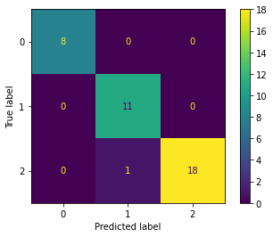

Afinación de los parámetros de modelos¶
30 min | Ultima modificación: Abril 13, 2020
Este tutorial demuestra como obtener la mejor combinación de hiperparámetros posibles de un modelo usando cross-validation.
Carga de datos¶
[1]:
#
# Carga de datos del dataset del iris
#
from sklearn import datasets
data = datasets.load_iris()
#
# Carga de datos.
# Se verifica la cantidad de datos de la muestra
#
X, y = data.data, data.target
print(X.shape, y.shape)
(150, 4) (150,)
Partición de los datos¶
[2]:
from sklearn.model_selection import train_test_split
X_train, X_test, y_train, y_test = train_test_split(X, y, test_size=0.25, random_state=33)
Preprocesamiento¶
[3]:
from sklearn.preprocessing import StandardScaler
scaler = StandardScaler()
scaler.fit(X_train)
X_train = scaler.transform(X_train)
X_test = scaler.transform(X_test)
Creación de la malla de datos¶
[4]:
from sklearn.linear_model import SGDClassifier
from sklearn.model_selection import GridSearchCV
#
# La variable tuned_parameters es una lista de diccionarios
# que contiene los valores que pueden ajustarse
#
parameters = [ {'penalty': ['none']},
{'penalty': ['l2'],
'alpha': [0.00001, 0.00002, 0.00003]},
{'penalty': ['l1'],
'alpha': [0.00001, 0.00002, 0.00003],
'l1_ratio': [0.10, 0.15, 0.20]} ]
#
# Construye la malla de hiperparámetros
#
clf = GridSearchCV(SGDClassifier(),
parameters,
cv=5)
#
# Entrenamiento de todos los modelos y selección
# de la combinación óptima de parámetros
#
clf.fit(X_train, y_train)
[4]:
GridSearchCV(cv=5, error_score=nan,
estimator=SGDClassifier(alpha=0.0001, average=False,
class_weight=None, early_stopping=False,
epsilon=0.1, eta0=0.0, fit_intercept=True,
l1_ratio=0.15, learning_rate='optimal',
loss='hinge', max_iter=1000,
n_iter_no_change=5, n_jobs=None,
penalty='l2', power_t=0.5,
random_state=None, shuffle=True, tol=0.001,
validation_fraction=0.1, verbose=0,
warm_start=False),
iid='deprecated', n_jobs=None,
param_grid=[{'penalty': ['none']},
{'alpha': [1e-05, 2e-05, 3e-05], 'penalty': ['l2']},
{'alpha': [1e-05, 2e-05, 3e-05],
'l1_ratio': [0.1, 0.15, 0.2], 'penalty': ['l1']}],
pre_dispatch='2*n_jobs', refit=True, return_train_score=False,
scoring=None, verbose=0)
[5]:
#
# Combinaciones usadas de hiperparámetros
#
clf.cv_results_
[5]:
{'mean_fit_time': array([0.0029778 , 0.0026813 , 0.0027029 , 0.00276084, 0.00284386,
0.00289602, 0.00354352, 0.00304675, 0.00286613, 0.00259495,
0.00260658, 0.00264225, 0.00261641]),
'std_fit_time': array([2.64037071e-04, 1.03741554e-04, 1.62831155e-04, 1.24644029e-04,
1.42623341e-04, 1.55474465e-04, 7.35495721e-04, 4.33973398e-04,
2.39768052e-04, 5.78474424e-05, 9.58884313e-05, 5.83857066e-05,
4.43637976e-05]),
'mean_score_time': array([0.0004066 , 0.00045028, 0.00037251, 0.00045509, 0.00034795,
0.00033865, 0.00057549, 0.00040164, 0.00032053, 0.00035806,
0.00035367, 0.00033679, 0.00035515]),
'std_score_time': array([5.51605175e-05, 1.39943103e-04, 7.19840298e-05, 7.49248204e-05,
3.83697205e-05, 1.94638363e-05, 2.31998865e-04, 6.61346838e-05,
1.01316395e-05, 6.18802367e-05, 5.34752411e-05, 4.11255394e-05,
5.27823627e-05]),
'param_penalty': masked_array(data=['none', 'l2', 'l2', 'l2', 'l1', 'l1', 'l1', 'l1', 'l1',
'l1', 'l1', 'l1', 'l1'],
mask=[False, False, False, False, False, False, False, False,
False, False, False, False, False],
fill_value='?',
dtype=object),
'param_alpha': masked_array(data=[--, 1e-05, 2e-05, 3e-05, 1e-05, 1e-05, 1e-05, 2e-05,
2e-05, 2e-05, 3e-05, 3e-05, 3e-05],
mask=[ True, False, False, False, False, False, False, False,
False, False, False, False, False],
fill_value='?',
dtype=object),
'param_l1_ratio': masked_array(data=[--, --, --, --, 0.1, 0.15, 0.2, 0.1, 0.15, 0.2, 0.1,
0.15, 0.2],
mask=[ True, True, True, True, False, False, False, False,
False, False, False, False, False],
fill_value='?',
dtype=object),
'params': [{'penalty': 'none'},
{'alpha': 1e-05, 'penalty': 'l2'},
{'alpha': 2e-05, 'penalty': 'l2'},
{'alpha': 3e-05, 'penalty': 'l2'},
{'alpha': 1e-05, 'l1_ratio': 0.1, 'penalty': 'l1'},
{'alpha': 1e-05, 'l1_ratio': 0.15, 'penalty': 'l1'},
{'alpha': 1e-05, 'l1_ratio': 0.2, 'penalty': 'l1'},
{'alpha': 2e-05, 'l1_ratio': 0.1, 'penalty': 'l1'},
{'alpha': 2e-05, 'l1_ratio': 0.15, 'penalty': 'l1'},
{'alpha': 2e-05, 'l1_ratio': 0.2, 'penalty': 'l1'},
{'alpha': 3e-05, 'l1_ratio': 0.1, 'penalty': 'l1'},
{'alpha': 3e-05, 'l1_ratio': 0.15, 'penalty': 'l1'},
{'alpha': 3e-05, 'l1_ratio': 0.2, 'penalty': 'l1'}],
'split0_test_score': array([0.86956522, 0.86956522, 0.86956522, 0.7826087 , 0.91304348,
0.82608696, 0.82608696, 0.69565217, 0.86956522, 0.91304348,
0.82608696, 0.86956522, 0.73913043]),
'split1_test_score': array([0.91304348, 0.73913043, 0.86956522, 0.91304348, 0.91304348,
0.91304348, 0.7826087 , 0.91304348, 0.95652174, 0.91304348,
0.86956522, 0.91304348, 0.82608696]),
'split2_test_score': array([1. , 0.86363636, 0.90909091, 0.90909091, 0.81818182,
0.95454545, 0.72727273, 0.86363636, 0.95454545, 0.95454545,
1. , 0.90909091, 0.95454545]),
'split3_test_score': array([0.95454545, 0.95454545, 0.86363636, 0.90909091, 0.90909091,
0.72727273, 0.81818182, 0.90909091, 0.95454545, 0.90909091,
0.95454545, 0.95454545, 0.81818182]),
'split4_test_score': array([1. , 0.72727273, 0.77272727, 0.77272727, 0.81818182,
0.77272727, 0.77272727, 1. , 0.77272727, 0.95454545,
0.77272727, 0.95454545, 0.95454545]),
'mean_test_score': array([0.94743083, 0.83083004, 0.856917 , 0.85731225, 0.8743083 ,
0.83873518, 0.78537549, 0.87628458, 0.90158103, 0.92885375,
0.88458498, 0.9201581 , 0.85849802]),
'std_test_score': array([0.05064227, 0.08604081, 0.04511127, 0.0651203 , 0.0458498 ,
0.08470495, 0.03543231, 0.10051967, 0.07246688, 0.02102678,
0.08291544, 0.0319303 , 0.08411268]),
'rank_test_score': array([ 1, 12, 10, 9, 7, 11, 13, 6, 4, 2, 5, 3, 8], dtype=int32)}
[6]:
#
# Mejor modelo
#
clf.best_estimator_
[6]:
SGDClassifier(alpha=0.0001, average=False, class_weight=None,
early_stopping=False, epsilon=0.1, eta0=0.0, fit_intercept=True,
l1_ratio=0.15, learning_rate='optimal', loss='hinge',
max_iter=1000, n_iter_no_change=5, n_jobs=None, penalty='none',
power_t=0.5, random_state=None, shuffle=True, tol=0.001,
validation_fraction=0.1, verbose=0, warm_start=False)
[7]:
#
# Coeficientes del mejor modelo
#
clf.best_estimator_.coef_
[7]:
array([[-17.11345065, 13.34621913, -19.44408516, -19.37956468],
[ -3.57221559, -3.50681797, 14.01690648, -8.24023211],
[ -2.3230746 , -11.98231611, 39.19242903, 42.88226925]])
[8]:
#
# Interceptos del mejor modelo
#
clf.best_estimator_.intercept_
[8]:
array([-10.11758215, -0.85261756, -58.61404576])
Evaluación del mejor modelo encontrado¶
[9]:
from sklearn import metrics
#
# Pronóstico para el conjunto de entrenamiento
#
y_train_pred = clf.predict(X_train)
# Precisión para el conjunto de entrenamiento
metrics.accuracy_score(y_train, y_train_pred)
[9]:
0.9642857142857143
[10]:
# Precisión para el conjunto de prueba
y_pred = clf.predict(X_test)
metrics.accuracy_score(y_test, y_pred)
[10]:
0.9736842105263158
[11]:
#
# Métricas de evaluación
#
print(metrics.classification_report(y_test, y_pred, target_names=data.target_names))
precision recall f1-score support
setosa 1.00 1.00 1.00 8
versicolor 0.92 1.00 0.96 11
virginica 1.00 0.95 0.97 19
accuracy 0.97 38
macro avg 0.97 0.98 0.98 38
weighted avg 0.98 0.97 0.97 38
[12]:
#
# Matriz de confusión
#
metrics.confusion_matrix(y_test, y_pred)
#
# Note que en el ejemplo del tutorial anterior.
#
# array([[ 8, 0, 0],
# [ 5, 1, 5],
# [ 0, 0, 19]])
#
[12]:
array([[ 8, 0, 0],
[ 0, 11, 0],
[ 0, 1, 18]])
[13]:
from sklearn.metrics import plot_confusion_matrix
#
# Note que la función computa internamente
# el pronósitco del clasificador
#
plot_confusion_matrix(
clf, # clasificador entrenado
X_test, # matriz de variables de entrada
y_test); # valor real
